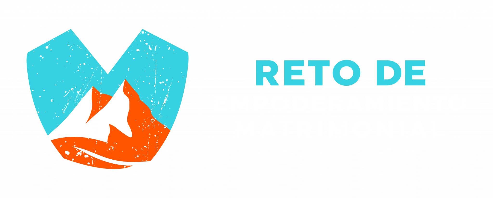
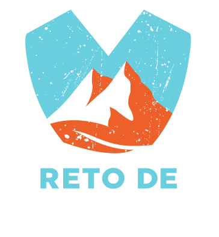
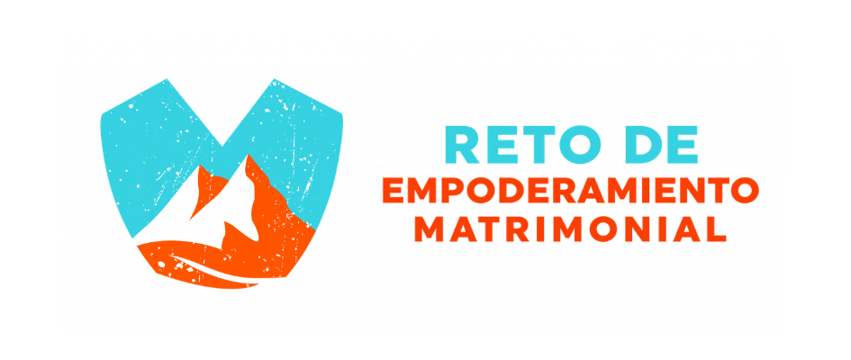

Não é um catálogo para copiar. É um conjunto de princípios, componentes e estruturas para criar apresentações diferentes entre si, mas claramente pertencentes ao REM Brasília.

O deck Mapas do Amor é uma referência de aplicação. Dele extraímos decisões de design, não uma coleção de telas a serem reproduzidas.
Profundidade, contraste, textura, luz e sensação de jornada.
Uma ideia dominante, leitura imediata e poucas camadas por tela.
Ciano orienta. Laranja confronta. Branco declara. Creme acolhe.
Assimetria controlada, respiro e foco visual inequívoco.
Rotas, conexões, cotas, marcos, luz, relevo e construção.
Nem toda palestra precisa de montanhas, mapas ou numerais.
Escolha a versão pela orientação do layout e pelo contraste do fundo. Nunca redesenhe, recolora ou digite o nome do projeto como substituição da marca.
Para assinatura discreta, selo, rodapé ou espaços compactos em fundo escuro.
Baixar PNGPreferencial em capa horizontal, encerramento, créditos e barras institucionais.
Baixar PNGPara capas, peças centralizadas e composições com grande área vertical.
Baixar PNG
Versão específica para superfícies claras aprovadas. Não usar a versão branca sobre claro.
Baixar PNGPara capas e telas claras com composição central ou orientação vertical.
Baixar PNGMantenha ao redor da marca uma distância equivalente à altura da letra “R” de RETO.
Horizontal: 240 px no Full HD. Vertical: 170 px. Ícone: 64 px.
Use apenas uma versão da marca por tela, salvo em créditos institucionais.
O fundo não é decoração. Ele define tom, contraste e velocidade de leitura. O sistema possui uma base escura preferencial e uma base clara de uso intencional.
Ideal para abertura, conceitos, versículos, emoção, confronto e encerramento.
Use para exercícios, frameworks, tabelas simples, instruções e momentos de alívio visual.
Noite ou azul-petróleo muito escuro. Nunca preto chapado sem profundidade.
Grão fino ou curvas discretas entre 4% e 12% de opacidade.
Um facho, halo ou névoa direcionando o olhar ao conteúdo principal.
Texto branco/creme; ciano e laranja usados como sinal, não preenchimento excessivo.
Creme mineral, pergaminho ou cinza quente. Evite branco puro.
Azul-petróleo ou grafite. Não use corpo de texto em laranja.
Topografia ou grão em tom escuro com 3% a 7% de opacidade.
Use exclusivamente os arquivos “Fundo Claro” disponibilizados neste guia.
A variação clara não é um tema alternativo para toda a palestra. Ela funciona como mudança de ritmo e deve servir à compreensão.
| Uso | Recomendação | Motivo |
|---|---|---|
| Palestra predominantemente emocional | 0% a 15% claro | Preserva imersão e profundidade. |
| Palestra prática ou didática | 15% a 30% claro | Cria pausas funcionais para método e exercício. |
| Bloco de atividade | até 3 slides consecutivos | Evita que a variação pareça outra identidade visual. |
A seguir estão estruturas abstratas. O designer escolhe a família conforme a função da mensagem e combina apenas os componentes necessários.
Para tese, frase-choque, transição ou conclusão. Sem imagem obrigatória.
Uma explicação curta.
Texto e elemento visual com pesos diferentes. Evite dois blocos igualmente fortes.
O numeral organiza; o texto ensina.
Somente quando existe ordem real. Uma etapa por tela.
Uma pergunta, uma regra e um tempo.
O fundo claro aumenta legibilidade e indica mudança do ouvir para o fazer.
Tipografia serifada, silêncio visual e referência isolada.
A rota representa transformação, não ornamentação.
Use linha, pontos ou convergência quando a mensagem envolve movimento.
Cada tela deve usar poucos componentes. A unidade vem da gramática visual, não da repetição da mesma composição.
| Componente | Função | Uso recomendado | Limite |
|---|---|---|---|
| Título display | Fixar a ideia principal | Caixa alta, peso 800/900 | Até 8 palavras |
| Texto serifado | Reflexão, Escritura, acolhimento | Cor creme, entrelinha aberta | Até 3 linhas |
| Numeral técnico | Marcar sequência e progresso | Contorno ciano, cotas opcionais | 1 por tela |
| Facho de luz | Direcionar o olhar | Diagonal ou radial | 1 fonte |
| Topografia | Criar território e profundidade | Baixa opacidade | Nunca atrás de texto fino |
| Rota/conexão | Representar caminho ou relação | Linha contínua ou tracejada | Até 5 pontos |
| Fotografia | Humanizar ou criar metáfora | Recorte, máscara ou integração | 1 imagem dominante |
| Logo REM | Assinatura institucional | Capa, fechamento ou rodapé discreto | 1 versão |
Somente aqui o deck de referência aparece diretamente. O objetivo é mostrar como analisar uma solução existente e separar o que é princípio do que é específico daquela palestra.
Numeral, desenho técnico e palavra central.
Esta parte não é visual. É o esqueleto narrativo que todo palestrante REM deve seguir.
Abrir com a identidade REM e o tema forte da palestra.
Dizer claramente o que o casal vai ganhar ao final. "Hoje vocês vão aprender a lidar com o conflito sem destruir a aliança."
Mostrar uma cena real do casamento. Algo que gere: "isso acontece lá em casa".
Nomear o problema sem aliviar: conflito, distância, orgulho, rotina, ego, silêncio, comparação, desejo, frustração.
Trocar a leitura superficial por uma leitura mais profunda. "O problema não é só a briga. É o que está por baixo dela."
Toda palestra precisa de uma imagem-mãe: mapa, banco, aldeia, sol e lua, uma só carne, iceberg, algemas, luta, mesa, rota.
O texto entra como fundamento, não como enfeite. João, Gênesis, Provérbios e Mateus sustentam a mensagem.
Transformar a verdade em método: 4 passos, perguntas guiadas, depósitos e saques, necessidades emocionais, 4V.
Levar o casal a assumir responsabilidade. Não é "meu cônjuge precisa mudar". É "qual parte da restauração começa em mim?".
Todo tema vira prática entre marido e mulher: oração, entrega de conceitos errados e compromisso do casal.
Fechar com uma decisão clara. Algo que o casal consiga repetir e praticar.
Encerrar com uma sentença curta, forte e lembrável. "Quem conhece o mapa, caminha junto."
Cada palestra deve ter obrigatoriamente:
A apresentação precisa chegar ao palco tecnicamente íntegra.
| Item | Padrão |
|---|---|
| Formato | 16:9 · 1920 × 1080 px |
| Entrega | PPTX editável + PDF de segurança. |
| Fontes | Poppins + Source Serif 4. Incorporar ou enviar junto. |
| Texto | Uma ideia por tela; títulos curtos; nenhum roteiro completo projetado. |
| Fundos | Escuro como base. Claro apenas com intenção e logo específica. |
| Imagens | Alta resolução; máscara e contraste testados no telão. |
| Vídeo | MP4 H.264 Full HD, áudio incorporado e arquivo separado. |
| Marca | Somente arquivos oficiais deste guia. |
{kind=link}
{kind=link}
{kind=link}
{kind=link}
{kind=link}